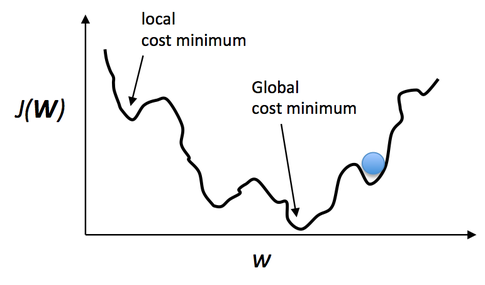

Training procedure of a neural network
- In this section, we will discuss about :
- Training a neural network
- Gradient descent algorithm
- Backpropagation algorithm
- Forward propagation
- Backward propagation This backward propagation step can be further sub-divided into two steps:
- Backpropagation to the output layer
- Backpropagation to the hidden layer
Cost function
So far, the architecture and the components of a neural network have been discussed in the previous sections. After designing the network architecture, the next task is to train the network with the training data. To train the network, the data will be given as an input to the network. Then the loss function will be calculated from the predicted network's output and the desired output.\par Consider a n-dimensional training sample vector, $\mathbf{x}=[x_1,x_2,x_3......x_n]^T$, where $x_1,x_2,x_3,...,x_n$ are the training pixels (scalar values). The predicted vector of the network is $\mathbf{\hat{x}}=[\hat{x}_1,\hat{x}_2,\hat{x}_3......\hat{x}_n]^T$, and the desired output vector is $\mathbf{d}=[d_1,d_2,d_3......d_n]^T$.\par The predicted vector $\mathbf{\hat{x}}$ can be written as: $$ \mathbf{\hat{x}}=f(\mathbf{x},\mathbf{w},b), $$ Where $\mathbf{w}, b$ are the parameters, that the network or model is supposed to learn and, where $f(.)$ is the activation function. So we can write the loss function (also called as cost function) as a function of weights and the bias. \begin{equation} J(\mathbf{w},b)=\frac{1}{n}\sum_{i=1}^{n}\big({ x_i-\hat{x_i} }\big)^2 \end{equation} This cost function is called Mean-Squared-Error (MSE) cost function. In training, the key task is to minimize this cost function by adjusting the weights and the bias connections.Gradient descent algorithm
The gradient descent algorithm is a very efficient way to find the optimum values of the weights for which the cost function can be minimized.
Figure : An example of non-convex cost function. It may be very challenging to find the global
minimum point of a non-convex cost function for the gradient descent algorithm.
As a solution of the above mentioned problems, there is a modification in the
gradient descent algorithm, it is called Stochastic Gradient Descent (SGD). In SGD, the
gradient is computed and the weight is updated from every single training sample. This process
in continued for each and every training samples. It does not need to go through all the training
samples to do one single update in weights like the gradient descent. As a consequence, the SGD is
faster than the gradient descent. Since we calculate the gradient for every single training sample,
the gradient gets very noisy and there are higher fluctuations.\par
There is another variation, it is called Mini Batch Gradient Descent (MB-GD). In this method,
the training dataset is randomly subdivided into batches, e.g., 10 or 20 or more training samples are grouped together.
Then the batches are passed through the network to update the weights. This modified version is more popular than above
discussed other two versions. It is less noisy than the SGD and additionally faster compared to the gradient descent.